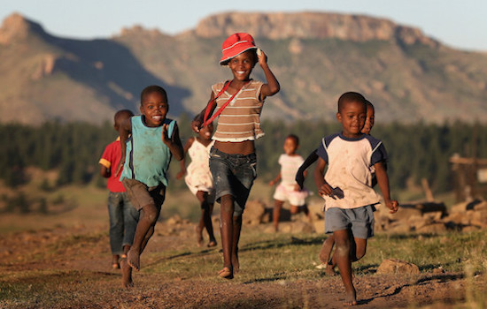
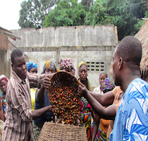

<!DOCTYPE html>
<html>
<head>
    <title>Home | Manus Foundation for Sustainable Living</title>
</head>
<body>

</body>
</html>
<html lang="en">
<head>
    <meta charset="UTF-8">
    <meta name="viewport" content="initial-scale=1">
    
    <!--GOOGLE FONTS-->
    <link href='http://fonts.googleapis.com/css?family=Open+Sans:300italic,400italic,600italic,700italic,800italic,400,300,600,700,800' rel='stylesheet' type='text/css'>
    <!--FONTAWESOME ICON FONTS-->
    <link rel="stylesheet" href="css/font-awesome.min.css">   
    <!--FLEXSLIDER--> 
    <link rel="stylesheet" href="css/flexslider.css" type="text/css">
    <!--BOOTSTRAP-->
    <link rel="stylesheet" href="css/bootstrap.min.css">
    <!--CUSTOM STYLES-->
    <link rel="stylesheet" href="css/style.css">
    
       
    
    <title>Home | Manus Foundation for Sustainable Living</title>
</head>
<body>

<section id="site-banner" class="site-banner" data-stellar-background-ratio="0"> <!--START SITE-BANNER-->
    <div class="site-banner-inner">
           
        <div class="container">
            <div class="row">                
                <div class="col-md-12">
                    
                    <header class="banner-header"><!--START BANNER-HEADER-->
                        <h1><span class="hilighted-text">Welcome.</span><br>We are the Manus Foundation for Sustainable Living</h1>
                        
                        <div class="flexslider"><!--START FLEXSLIDER TEXT BASED SLIDESHOW-->
                            <ul class="slides">
                                <li><p>"Every man must decide whether he will walk in the light of creative altruism or in the darkness of destructive selfishness."</p></li>
                                <li><p>"The life of a man consists not in seeing visions and in dreaming dreams, but in active charity and in willing service."</p></li>
                                <li><p>"Every good act is charity. A man's true wealth hereafter is the good that he does in this world to his fellows."</p></li>
                            </ul>
                        </div><!--END FLEXSLIDER TEXT BASED SLIDESHOW--> 
                          
                        <span class="sep"></span>                     
                    </header><!--END BANNER-HEADER-->
                    
                </div>
            </div><!--END ROW-->
            
            <a href="http://form.jotform.us/form/51355094252149?" class="btn donate-btn">Donate to the Cause</a> 
            <a href="#section-contribute" class="to-next-page link"><i class="fa fa-3x fa-angle-double-down"></i></a>     
                 
        </div><!--END CONTAINER-->
            
    </div><!--END SITE-BANNER-INNER-->
</section><!--END SITE-BANNER-->

<!--
/////////////////////////////////////////////////////////////////////
               NAVIGATION SECTION
/////////////////////////////////////////////////////////////////////
-->


<div class="navbar-wrapper"><!--START NAVBAR-->
    <nav class="navbar navbar-default" role="navigation">
        <div class="container">
            <div class="navbar-header"><!--START NAVBAR HEADER CONTAINING BRAND NAME-->
                <button type="button" class="navbar-toggle" data-toggle="collapse" data-target="#bs-example-navbar-collapse-1">
                  <span class="sr-only">Toggle navigation</span>
                  <span class="icon-bar"></span>
                  <span class="icon-bar"></span>
                  <span class="icon-bar"></span>
                </button>
                <a class="navbar-brand" href="#">Manus Foundation</a>
            </div><!--END NAVBAR HEADER-->
    
          <div class="collapse navbar-collapse" id="bs-example-navbar-collapse-1">
        
            <ul class="nav navbar-nav navbar-right">
              <li><a href="#site-banner" class="link">Home</a></li>
              <li><a href="#section-contribute" class="link">Contribute</a></li>
              <li><a href="#section-about" class="link">About</a></li>
              <li><a href="#about-company" class="link">Organization</a></li>
              <li><a href="#contact" class="link">Contact</a></li>
            </ul>
            
          </div><!-- /.navbar-collapse -->
          
        </div><!--END CONTAINER-->
    </nav>
</div><!--END NAVBAR-->

<!--
/////////////////////////////////////////////////////////////////////
               CONTRIBUTE SECTION STARTS
/////////////////////////////////////////////////////////////////////
-->

<section id="section-contribute" class="site-section"><!--START CONTRIBUTE SECTION-->
    <div class="container">        
        <header class="section-header">
            <div class="row">
                <div class="col-md-5"><h1><span class="dark-word">how &amp;</span> <span class="light-word bg-orange fadeThis">why</span></h1></div>
                <div class="col-md-7"><p>The team at the Manus Foundation believe that actions speak louder than words so be a part of the breakthrough and help turn someone’s dream into a reality.</p><span class="sep-hd"></span></div>                
                
            </div>
            
        </header>
    </div><!--START CONTAINER-->
    
    <div class="sec-content-wrapper"><!--START CONTENT SECTION-->
        <div class="container"> 
            <div class="row">
                <div class="col-md-12">
                    
                    <ul class="contribute-blocks remove-gray fadeThis">
                        <li>
                            <i class="fa fa-4x fa-truck"></i>
                            <h2>Monthly Donations</h2>
                            <p>Support one of our on-going projects. Cancel anytime!</p>
                            <a href="http://form.jotform.us/form/51354501635146?" class="btn blue-btn">Donate</a>
                            <a href="#about-company" class="btn read-more-btn">Learn more</a>
                        </li>
                        
                        <li>
                            <i class="fa fa-4x fa-heart"></i>
                            <h2>One-time Donation</h2>
                            <p>Make a one-time donation to the cause. No strings attached!</p>
                            <a href="http://form.jotform.us/form/51355094252149?" class="btn donation-btn">Donate</a>
                            <a href="" class="btn d-read-more-btn">Learn more</a>
                        </li>
                        
                        <li>
                            <i class="fa fa-4x fa-users"></i>
                            <h2>Volunteer Positions</h2>
                            <p>Become a volunteer in the organization that will change the world.</p>
                            <a href="http://form.jotform.us/form/51354690884161?" class="btn blue-btn">Join Us</a>
                            <a href="" class="btn read-more-btn">Learn more</a>
                        </li>
                    </ul>
                    
                </div><!--END col-md-12-->
            </div><!--END ROW-->
        </div><!--END CONTAINER-->
    </div><!--END CONTENT SECTION-->
    
</section>


<!--
/////////////////////////////////////////////////////////////////////
        SECTION SEPERATOR WITH PARALLAX EFFECT STARTS 
/////////////////////////////////////////////////////////////////////
-->

<!--
///////////////////////////////////////////
        ABOUT SECTION STARTS
//////////////////////////////////////////
-->


<section id="section-about" class="site-section"><!--START ABOUT SECTION-->
    <div class="container"> 
               
        <header class="section-header"><!--START HEADER SECTION -->
            <div class="row">
                <div class="col-md-5"><h1><span class="dark-word">project</span><span class="light-word bg-orange fadeThis">mfsl</span></h1></div>
                <div class="col-md-7"><p>We are the Manus Foundation for Sustainable Living working towards improving living conditions around the world for the lower-class and creating a brighter tomorrow.</p><span class="sep-hd"></span></div>
                
            </div>
        </header><!--END HEADER SECTION-->
        
    </div>
    
    <div class="sec-content-wrapper"><!--START CONTENT SECTION-->
        <div class="container">       
            <div class="row">
                
                <div class="col-md-6">
                    <div class="res-img">
                        
                    </div>
                </div>
                
                <div class="col-md-6">
                    
                    <div class="desc">
                        <h2>About what we do.</h2>
                        <p>The Manus Foundation for Sustainable Living is a non-profit organization that works to reduce and eliminate poverty in the United States and across the world twenty-four seven. But we need your help.</p>
                        <p>Every day, we collect donations from individuals like you to continue working towards our goal of eleviating poverty across the globe. With your help, whether it's volunteer work or a simple donation of $10 dollars, together, we can bring sustainable living to everyone. Join thethe global movement that will make change walk down the streets of African villages and cities like Detroit, Bridgeport, Chicago, and Stockton.</p>
                    </div><!--END CLASS desc-->
                    
                </div>
                
            </div><!--END ROW-->
            
            <div class="row"> 
                <div class="vid-content"><!--START VIDEO DESCRIPTION-->               
                    <div class="col-md-6">
                        
                        <div class="desc">
                            <h2>We care. A lot.</h2>
                            <p>The Manus Foundation for Sustainable Living constantly works to improve living conditions. See how and why you should help the cause.</p>
                            
                            <ul class="desc-list">
                                <li>Donate to help us help the less fortunate.</li>
                                <li>Volunteer with us to be a part of a global movement.</li>
                                <li>Every cent you give is used for a good cause.</li>
                                <li>Help us create a brighter tomorrow.</li>
                                <li>Forget what you can get and see what you can give.</li>
                            </ul>
                        </div><!--END desc--> 
                                               
                    </div><!--END col-md-6-->
                    
                    <div class="col-md-6"> <!--START RESPONSIVE VIDEO-->
                        <div class="res-video">
                            <iframe width="520" height="315" src="poverty.mp4" frameborder="0" allowfullscreen></iframe>
                        </div>
                    </div><!--END RESPONSIVE VIDEO-->
                    
                </div><!--END vid-content-->
                
            </div><!--END ROW-->
            
            <div class="row"><!--START ROW CONTAINING CAROUSEL-->
                <div class="col-md-12">						
                
                    <div class="carousel"><!--START CAROUSEL-->
                        <ul class="slides">
                            <li></li>
                            <li></li>
                            <li></li>
                            <li></li>
                            <li></li>
                            <li></li>
                            <li></li>
                            <li></li>
                        </ul>
                    </div><!--END CAROUSEL-->
                    
                </div><!--END COLUMNS CONTAINING CAROUSEL-->						
            </div><!--END ROW CONTAINING CAROUSEL-->
            
        </div><!--END CONTAINER--> 
              
    </div><!--END sec-content-wrapper-->
    
</section>


<!--
///////////////////////////////////////////
        ABOUT MSFL SECTION STARTS 
//////////////////////////////////////////
-->


<section id="about-company" class="site-section"><!--START ABOUT COMPANY SECTION-->
    
    <div class="sec-content-wrapper">
        <div class="container">  
                           
            <header class="section-header"> <!--START HEADER SECTION--> 
                <h1>about <span class="brand-name">mfsl</span></h1>
                <p>A lot of us may feel like a drop in the bucket, but remember, every drop counts!</p>
                <span class="sep-hd"></span>
            </header><!--END HEADER SECTION-->         

            <div class="row">
                
                <div class="col-md-4">                    
                    <div class="block-about-company">
                        
                        <h2>Who We Are</h2>                        
                        <p>The Manus Foundation for Sustainable Living works day and night to make the world a better place by improving living conditions from coast to coast and overseas.</p>
                        <p>The team at the Manus Foundation was created by the Manus Family in 2015 and continues to work around the clock with volunteers to make the world a better place.</p>                        
                        <a class="btn donate-btn">Learn more</a>
                        
                    </div><!--END block-about-company-->                 
                </div><!--END col-md-4-->
                
                <div class="col-md-4">                    
                    <div class="block-about-company">
                        
                        <h2>What We Do</h2>
                        <p>What we do is simple. We collect donations from caring individuals like you and put them towards food, clothing, and affordable housing for the impoverished.</p>
                        <ul class="do-list">
                            <li>Clothing</li>
                            <li>Food and water</li>
                            <li>Affordable shelter</li>
                            <li>Medical supplies</li>
                        </ul>
                        <a class="btn donate-btn">Learn more</a>
                        
                    </div><!--END block-about-company-->                     
                </div><!--END col-md-4-->
                
                <div class="col-md-4">                    
                    <div class="block-about-company">
                        
                        <h2>Our Projects</h2>
                        <p>The Manus Foundation runs four year-round fundraising projects that will help underpriviliged people around the world. Read more about them below.</p>
                        <ul class="do-list">
                            <li><a href="">Food For Familes</a></li>
                            <li><a href="">Pharmaceuticals</a></li>
                            <li><a href="">Shelter for the Future</a></li>
                            <li><a href="">Clothing</a></li>                      
                        </ul>
                        
                    </div><!--END block-about-company-->                     
                </div><!--END col-md-4-->
                
            </div><!--END ROW-->            
        </div><!--END COINTAINER-->
    </div><!--END sec-content-wrapper-->
    
    <!--START SECTION SEPERATOR STYLE-->
    <svg id="aboutcombottomsep" xmlns="http://www.w3.org/2000/svg" version="1.1" width="100%" height="100" viewBox="0 0 100 102" preserveAspectRatio="none">
            <path d="M0 0 L50 100 L100 0 Z" />
    </svg>
    <!--END SECTION SEPERATOR STYLE-->
</section><!--END SECTION ABOUT-COMPANY-->


<!--
///////////////////////////////////////////
        CONTACT SECTION STARTS 
//////////////////////////////////////////
-->

<section id="contact" class="site-section"><!--START CONTACT SECTION-->
    <div class="container">  
              
        <header class="section-header"><!--START HEADER SECTION -->
            <div class="row">
                <div class="col-md-5"><h1><span class="dark-word">contact</span><span class="light-word bg-orange fadeThis">mfsl</span></h1></div>
                <div class="col-md-7"><p>Contact us with any questions, comments, or suggestions. We love hearing your feedback!</p><span class="sep-hd"></span></div>
                
            </div>
        </header><!--END HEADER SECTION -->
        
    </div><!--END container-->
    
    <div class="sec-content-wrapper"><!--START CONTENT SECTION -->
        <div class="container">        
            <div class="row">
                
                <div class="col-md-4">
                    
                    <ul class="social-links"><!--START SOCIAL LINKS-->
                        <li><a href="https://www.facebook.com/pages/Manus-Foundation-for-Sustainable-Living/921867214502796?ref=hl"><i class="fa fa-facebook"></i></a></li>
                        <li><a href="https://www.twitter.com/ManusFoundation"><i class="fa fa-twitter"></i></a></li>
                        <li><a href="https://www.plus.google.com/b/103586059970845253888/103586059970845253888/posts"><i class="fa fa-google-plus"></i></a></li>
                        <li><a href="https://www.linkedin.com/pub/benjamin-manus/b3/8b4/684"><i class="fa fa-linkedin"></i></a></li>
                        <li><a href="#"><i class="fa fa-rss"></i></a></li>
                        <li><a href="https://www.github.io/BenjaminManus"><i class="fa fa-github-alt"></i></a></li>
                    </ul><!--END SOCIAL LINKS-->
                </div><!--END col-md-4--> 
                <div class="col-md-4">
                    
                    <ul class="contact-details"><!--START CONTACT DETAILS-->
                        <li><i class="fa fa-home"></i>Canton, CT 06019 | United States</li>
                        <li><i class="fa fa-phone"></i>+1 (860) 693-9309</li>
                        <li><i class="fa fa-envelope"></i>manusfoundation@gmail.com</li>
                        <li><i class="fa fa-globe"></i>http://manusfoundation.github.io</li>
                    </ul><!--END CONTACT DETAILS-->							
                    
                </div><!--END col-md-4-->
                
                <div class="col-md-4"><!--START CONTACT FORM -->
                    <div class="form-wrapper">
                        <form action="mailto:benjamin.manus@gmail.com" method="post" id="contact-form">
                            <input type="text" class="name" name="name" id="name" placeholder="Name" required>
                            <input type="email" class="email" name="email" id="email" placeholder="Email" required>
                            <textarea placeholder="Your message here" name="message" id="message" required></textarea> 
                            <input type="submit" class="btn blue-btn" value="send message">
                        </form>
                    </div> <!--END form-wrapper-->           
                    
                </div><!--END col-md-4-->
                
            </div><!--END ROW-->
        </div><!--END CONTAINER-->
    </div><!--END CONTENT SECTION-->
    
</section><!--END CONTACT SECTION-->

<footer>
    <p>&copy; 2015 Manus Foundation for Sustainable Living - All Rights Reserved. | Sponsored by <a href="http://www.westfieldwebdesign.westfieldacademymun.net">Westfield Web Design</a>.</p>
</footer>

<script src="js/jquery-1.10.2.min.js"></script><!--JQUERY - JAVASCRIPT LIBRARY-->
<script src="js/bootstrap.min.js"></script><!--DEFAULT BOOTSTRAP JQUERY LIBRARY-->
<script src="js/jquery.flexslider-min.js"></script><!--FLEXSLIDER-->
<script src="js/jquery.stellar.min.js"></script><!--STELLAR>JS FOR PARALLAX EFFECT-->
<script src="js/jquery.sticky.js"></script><!--STICKY.JS FOR STICKY NAVIGATION-->
<script src="js/jquery.scrollTo-1.4.3.1-min.js"></script><!--SCROLLTO.JS FOR ANIMATED PAGE SCROLLING -->
<script src="js/jquery.fitvids.js"></script><!--FITVID.JS FOR RESPONSIVE VIDEOS -->
<script src="js/script.js"></script><!--CUSTOM JAVASCRIPT-->

</body>
</html>